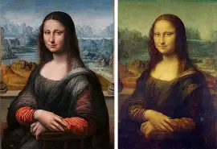

La Mona Lisa
Pintada por Leonardo da Vinci, esta obra es famosa por la enigmática sonrisa de la mujer retratada y su técnica innovadora.
Pintada por Leonardo da Vinci, esta obra es famosa por la enigmática sonrisa de la mujer retratada y su técnica innovadora.
Obra icónica de Vincent van Gogh, que muestra un cielo nocturno en movimiento sobre un tranquilo pueblo.
Pintura renacentista de Sandro Botticelli que representa a Venus emergiendo del mar sobre una concha.
El pintor noruego Edvard Munch (1863 - 1944) se considera parte del arte simbolista, pero su obra exploró la expresión de la angustia humana, por lo que fue una fuerte influencia para el movimiento expresionista.